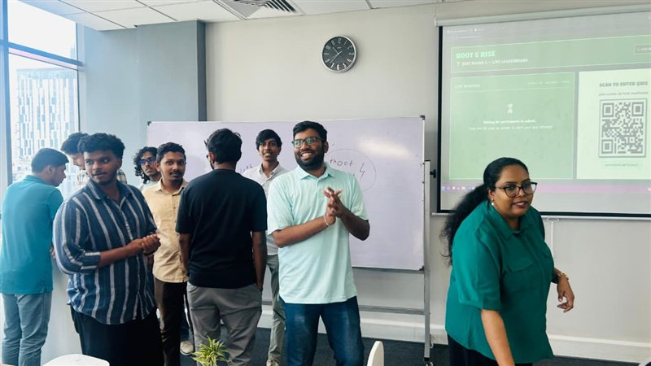
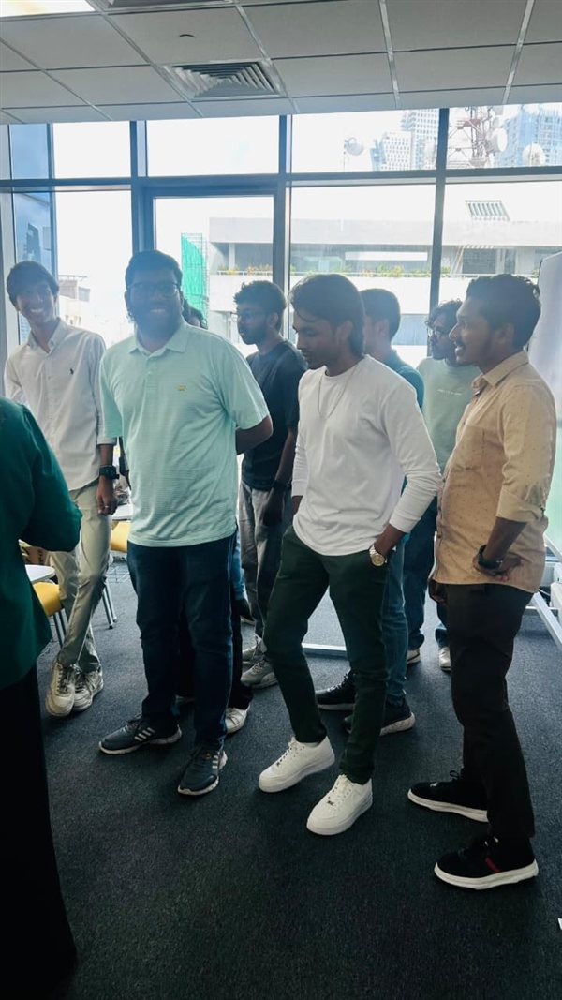
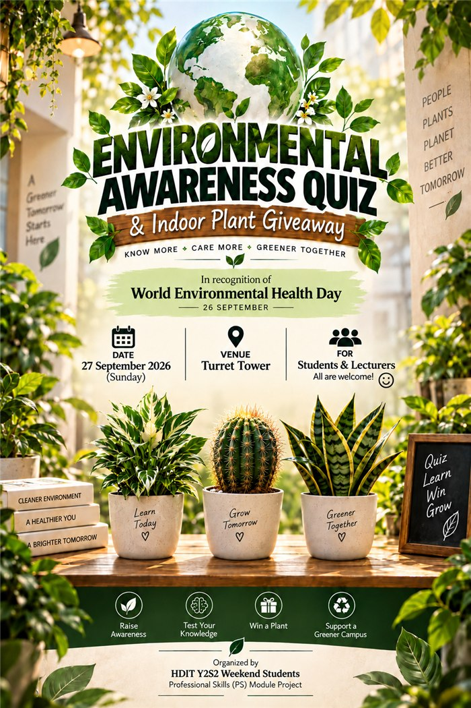
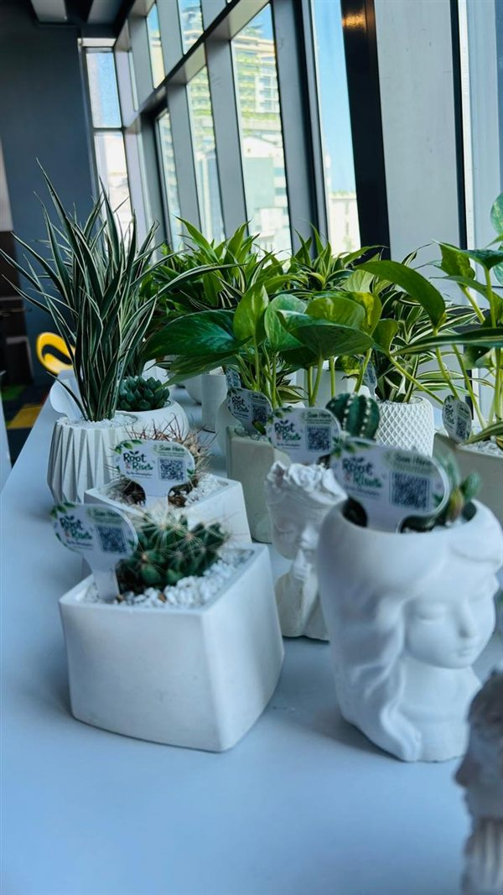
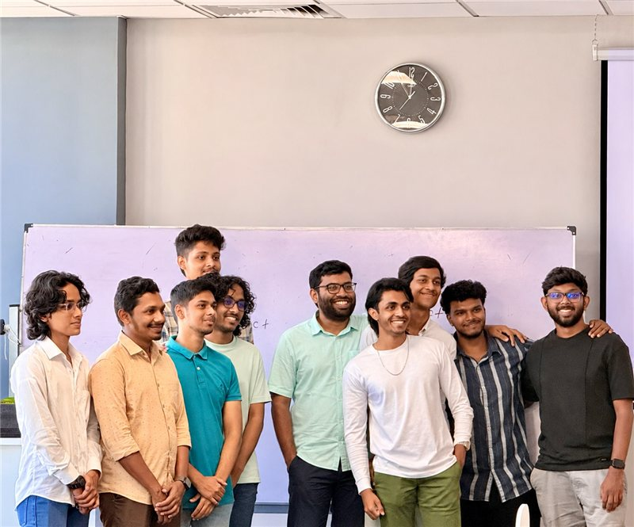
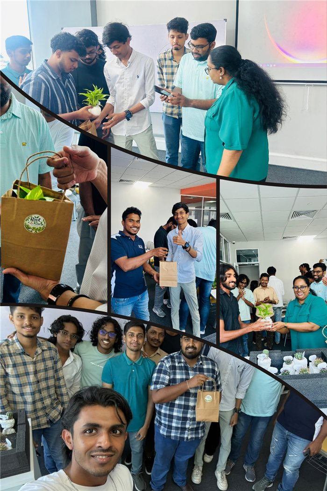
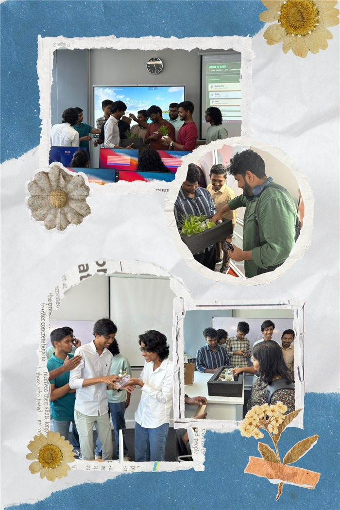
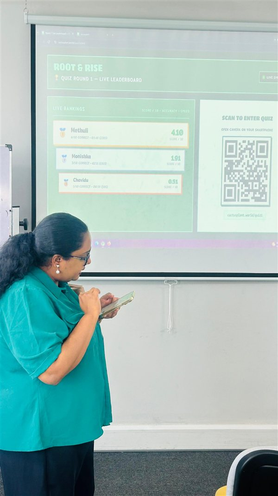
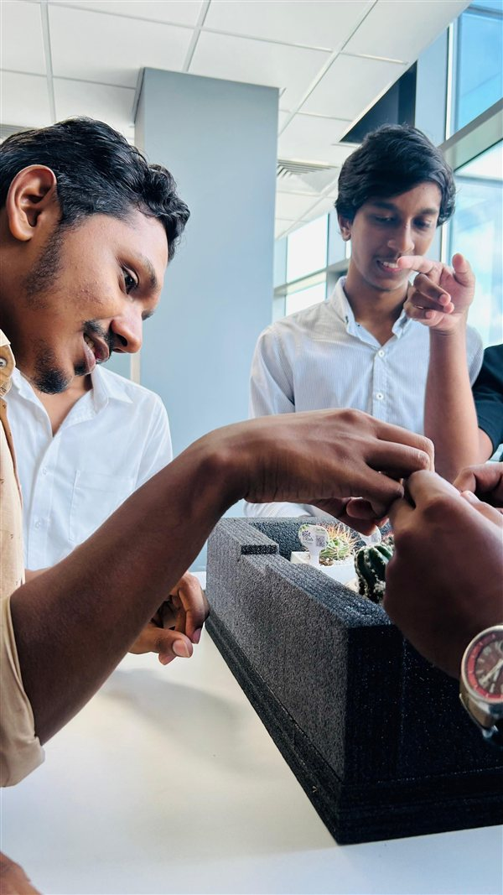
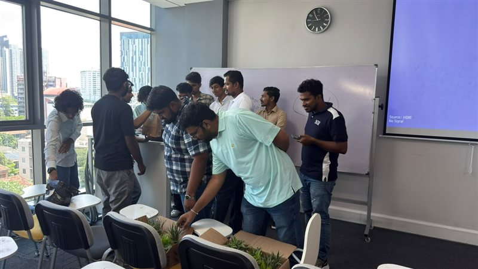

Mindset
Self-awareness · EQ · Self-controlUnderstanding myself and managing emotions professionally.
SCU
Year 2 · Semester 2
SCU · Professional Skills Journal
Hi, I'm MK. Mohamed Shafky
An animated learning portfolio that documents every Professional Skills lecture in detail — what I learned, how I experienced it, and how I applied it — before closing with Root & Rise, our final project, as real evidence of teamwork and growth.
Lecture records
Skill areas
Plants distributed
Project budget (LKR)
02 / About
I'm studying Higher Diploma in IT at SCU, currently in Year 2 · Semester 2. This journal documents everything I'm learning in the Professional Skills module — the people-skills that turn a coder into a well-rounded professional.
I built this site by hand with HTML, CSS and JavaScript. It's both my coursework and a small portfolio piece — a record of how I'm growing, one week at a time.
The site opens with my Professional Skills learning journey rather than project photos — the learning comes first.
Every lecture includes its focus, key concepts, what I learned, my experience, soft skills, real-life application and evidence.
Root & Rise appears near the end as the practical outcome of teamwork, planning, communication and responsibility.
04 / Lecture journal
Eleven recorded lectures — each one expanded into a full learning record: slide focus, key concepts, personal reflection, developed skills, real-life application and evidence. Pick a card to open the entry.
No lecture matches that search.
05 / Skill matrix
This section connects the weekly lessons to professional abilities I can use in academic, social and workplace contexts.
Understanding myself and managing emotions professionally.
Presenting my skills, achievements and growth in a professional way.
Making decisions that protect people, data and trust.
Handling professional conversations, documentation and follow-ups.
Reaching agreements that solve problems without damaging relationships.
Carrying myself with confidence in formal and social settings.
06 / Final project
This final section shows how the professional skills learned in lectures were applied through planning, teamwork, communication, budgeting and environmental responsibility.
Small plant · Big impact
The project encouraged students and lecturers to understand the importance of plants and take small eco-friendly actions in daily life. "Root" represents planting and caring, while "Rise" represents growth and a healthy environment.
Project moments
These photos highlight our final project presentation, teamwork and the plant-awareness activity in action.


The title Root & Rise represents encouraging people to grow plants and protect the environment. "Root" shows planting and caring, while "Rise" represents growth and a healthy environment.
Our group distributed plants to students and lecturers to promote environmental awareness and remind everyone that caring for nature starts with individual responsibility.
To promote environmental awareness among students and lecturers by distributing plants within the university premises.
The team discussed purpose, target audience, plant quantity, location, distribution method and required materials.
Plants were distributed inside the university premises with a short explanation about caring for plants.
Plants, location, participants, team members, bookmarks, photo booth props and photo booth.
| Resource | Quantity / Details |
|---|---|
| Plants | 30 plants |
| Location | University premises — Turret Tower, Hall HN505 |
| Participants | Students and lecturers |
| Team Members | 11 members |
| Item | Qty | Unit Cost (Rs.) | Total (Rs.) |
|---|---|---|---|
| Sapling prizes | 30 | 630 | 19,000 |
| Stickers | 40 | 60 | 2400 |
| Posters & Hosting Domain | 9 | 95 | 850 |
| Transport | - | - | 3,500 |
| Miscellaneous/contingency | 1 | - | 3400 |
30 plants were distributed successfully and the project created environmental awareness among participants.
Arranging plants, managing time, coordinating team members and organising distribution required careful planning.
I learned that small actions can create positive impact and that teamwork, planning, communication and responsibility are essential for project success.
| # | Name of the Student | SA Number |
|---|
The complete Root & Rise report includes the title page, group members, introduction, objectives, activities, outcomes, budget and gallery.
07 / Gallery
Project photos are kept for the final section, so the portfolio first highlights lecture learning, then finishes with real project evidence.







